1 Introduction
Air pollution’s adverse impact on respiratory health is a widely known issue. The World Health Organization acknowledged the significance of this risk factor in its 68th conference, where they note that “exposure to air pollutants, including fine particulate matter, is a leading risk factor for noncommunicable diseases in adults, including ischaemic heart disease, stroke, chronic obstructive pulmonary disease, asthma and cancer, and poses a considerable health threat to current and future generations,” (2015). Further, numerous studies have substantiated the risk that air pollution poses to population health, many linking air pollution to industrial areas and urbanization. On the other hand, other research recognize the variable impacts of interactions between urban built environments, air pollution, and health. This group of research considers factors ranging from the built environment’s impact on promoting walking and other forms of exercise, to the impact of exercising in areas with high levels of air pollution, and to the role that urban greenspace plays in reducing air pollution (Hankey, Marshall, and Brauer 2012), (Lee et al. 2022),(Alcock et al. 2017). The study of air pollution’s impact of respiratory health is complicated by the interactions between the natural environment, built environment, and human behavior. Therefore, approaching the problem using spatial methods may reveal prevailing patterns that result from the exchanges between all factors. This paper attempts to create a spatial model that predicts respiratory health patterns using air pollution and land cover data in the United States. By incorporating land cover data, I attempt to consider human interactions with the natural and built environment, and its impact on respiratory health, through direct or indirect means.
Associations between land use and health impacts have also been studied in the past, with varying findings. Wang and colleagues found a negative correlation between Chronic Obstructive Pulmonary Disease (COPD) mortality and land use mix in most neighborhoods in China’s Jing’an district except for northwest areas. In northwest neighborhoods, COPD mortality was positively correlated with land use mix (Wang et al. 2019, 7). Other studies, such as Alcock and colleagues’ analysis of asthma hospitalizations in the UK, find that increases in urban green space and tree density are associated with reductions in asthma hospitalizations (Alcock et al. 2017, 39). However, models that included air pollutant exposure variables complicated this correlation (Alcock et al. 2017, 39). Another study that analyzes variation in spatial distribution of lung cancer incidence rates in Shanghai, China found that industrial parks and urban-rural mixed areas show higher risk of lung cancer (Wang et al. 2022, 13). Wang and colleagues also postulate that high lung cancer rates in high-density urban areas away from industrial pollution exposures may be due to traffic and other pollutants (2022, 13).
The complex results of past studies underscore the symbiotic nature of human interactions with the built environment, and the downstream implications on individuals’ health status. Wang and colleagues explained the changes in relationship between land use mix and COPD mortality by linking the existence of arterial roadways, which may increase opportunities for generation of air pollutants and negatively impact health, to their use to improve access to care (2019). The shift in balance between the two factors, they say, is why results varied in highly urban areas as compared to highly rural regions (Wang et al. 2019, 8). Kim and colleagues also address the dichotomy of the urban environment’s impact on traffic, air pollution and behavior by considering walkability and land use diversity in their model of the association between the built environment and asthma in Los Angeles, California (2023). Their model builds upon urban planning ideas that mixed-use land reduces motorized travel through promotion of ride-sharing, walking, and shortened distances to destinations, while also promoting better physical through dedicated open spaces and recreational areas (Kim et al. 2023, 58). One limitation of Kim and colleagues’ model is the limited spatial scope. In this paper, I build upon elements of Kim and colleagues’ model but incorporate other scale considerations.
Scale considerations are a challenge in all spatial analyses, therefore it is not surprising that scale is listed as limitation listed in most spatial analyses of land use, pollution, and respiratory health. Huang and colleagues address the modifiable areal unit problem (MAUP) by analyzing the impacts of land use data at different buffer sizes to determine trends across different spatial units (2021). They also select data from different regions that are representative of different environments and climates to determine if regional factors influence their air pollution models (Huang et al. 2021). Their results suggest that land cover types have varying significance across spatial scales, concluding that air pollutant levels are primarily affected by regional land cover types (Huang et al. 2021, 7). This paper builds upon their approach by acknowledging the role that climate plays in air pollution distribution, proliferation, and mitigation. Separating U.S. land areas based on climate region will acknowledge the spillover effects of air pollution that may not be appropriately captured in analyses performed at local scales (Simon et al. 2015).
This research uses U.S. age-adjusted mortality rates from cardiovascular and respiratory diseases (defined as ICD-10 codes I00-I99 and J00 - J98) as the health indicator. In Mueller and colleagues’ literature analysis on greenspace and respiratory health research, they found that respiratory mortality had the most consistent positive evidence as compared to research measuring other health indicators, including asthma, lung function, hospital admissions, among other measures (Mueller et al. 2022, 28). Using mortality rates from cardiovascular and respiratory diseases will capture acute and chronic conditions that can be impacted by instances of severe drops in air quality and more moderate yet sustained air quality issues.
1.1 Relationship Between Health and Place
One reason why it is difficult to prove a causal relationship between environmental risk factors such as air pollution and a health outcome is because health outcomes can be cumulative results of a combination of factors. When considering air pollution’s impact on health, one such factor are air pollution’s exposure pathways. Exposure can vary depending on distance from sources of pollution and the amount of time spent breathing in pollutants, both of which can fluctuate when considering climate, ventilation, time spent outdoors, among other factors. Arguably the simplest way to measure exposure is by measuring proximity to pollutant sources. However, spatial analysis of epidemiological phenomena should consider more than just geographic location. This is because an individual’s activity spaces are not simply a feature of that person, but a reflection of a myriad of influences that result in an individuals’ choice to frequent those spaces. Entwisle highlights this topic in Putting People into Place, arguing that there is a critical need to “incorporate agency in theories of neighborhood and health,” (Entwisle 2007, 699). Entwisle identifies the symbiotic relationship between individuals’ opportunities, social interactions, BLAH that inform decisions to move to or remain in a space, and how that informs health decisions. She also acknowledges that individuals can influence their communities. Bernard and colleagues build on this notion by formalizing a conceptualization of neighborhoods. Their framework identifies four primary influences on access to health-related resources: “proximity, rights, prices, and informal reciprocity,” (Bernard et al. 2007, 1849). WRAP ABOUT HOW THIS RELATES.
This research acknowledges the role that individual decisions play in informing their activity spaces by including demographic and quality of life variables. The inclusion of these variables help to contextualize individuals within each county. These variables range from race to income, education, access to care, and health behaviors. By including demographic and quality of life variables, the model attempts to characterize those occupying the spaces, account for factors that influence interactions with health related resources, and acknowledge the role of positive and negative health behaviors on mortality risk.
The fact that this research fails to acknowledge the role that individuals’ play in influencing their localities is a shortcoming that can be addressed in future iterations of this model. Local communities are constantly being reshaped in large and small ways. Agency over change in space (use the vocabulary that Browning uses) can be evaluated by reviewing changes in localities over time. In this research, individual influence over their communities may manifest in improvements to regulations to reduce industrial air pollution, improvement to ventilation systems, and increases in indoor recreation alternatives, to name a few examples. Such interventions could lower community exposure to air pollution and potentially reduce adverse health impacts. A future enhancement to this model would incorporate variables over a longer time horizon to measure sensitivity of mortality rates to changes in localities over time.
1.2 Data and Methods
Data fall into four major categories: health, demographic, air pollution, and land use. However, since this is a spatial analysis, the common thread in all data sources is the spatial linkage. Spatial evaluation of air pollution’s impact on health is considered on a regional level. Following the approach that Simon and colleagues take to evaluate ozone trends in the U.S., this analysis also uses NOAA climate regions to summarize the analysis air pollution (2015). Evaluation of data on a regional scale is conceptually supported due to the NOAA climate region categorization of areas with similar wind, climate, and emissions sources, which all can influence the concentration of air pollution (Simon et al. 2015, pp 186, pp. 188). Additionally, in an acknowledgement of the environmental factors that influence both air pollution and health impacts, the model includes select annual, county-level climate variables.
This research focuses on particulate matter (PM) 2.5 measures from 2015, as captured by the Environmental Protection Agency (EPA) and further manipulated by the Centers for Disease Control and Prevention (CDC). PM 2.5 are “fine, inhalable particles with diameters that are generally 2.5 micrometers or smaller,” that have been linked to various complications with lung and heart functions (US EPA 2016). The EPA publishes extensive amounts of air quality data, which are accessible through their Air Data website. Available data include annual summaries by monitor.
Figure 1 plots the 2015 annual PM 2.5 measures across the contiguous U.S. to provide a geographic reference for monitor locations and start to visually represent the variation in PM 2.5 measurements by region. A visual inspection of Figure 1 reveals how monitors are distributed throughout each region and their individual readings. It is noted that monitors are highly concentrated in certain areas (for example, the New Jersey to Massachusetts area) and few and far between in others (for example, in the Western landlocked states). This observation leads to the acknowledgement of potential spatial bias: monitors are not normally distributed throughout space, therefore spatial bias may be introduced due to the distribution of data across the measurement areas. However, the level of spatial bias difficult to measure due to this model’s use of CDC-modeled data.
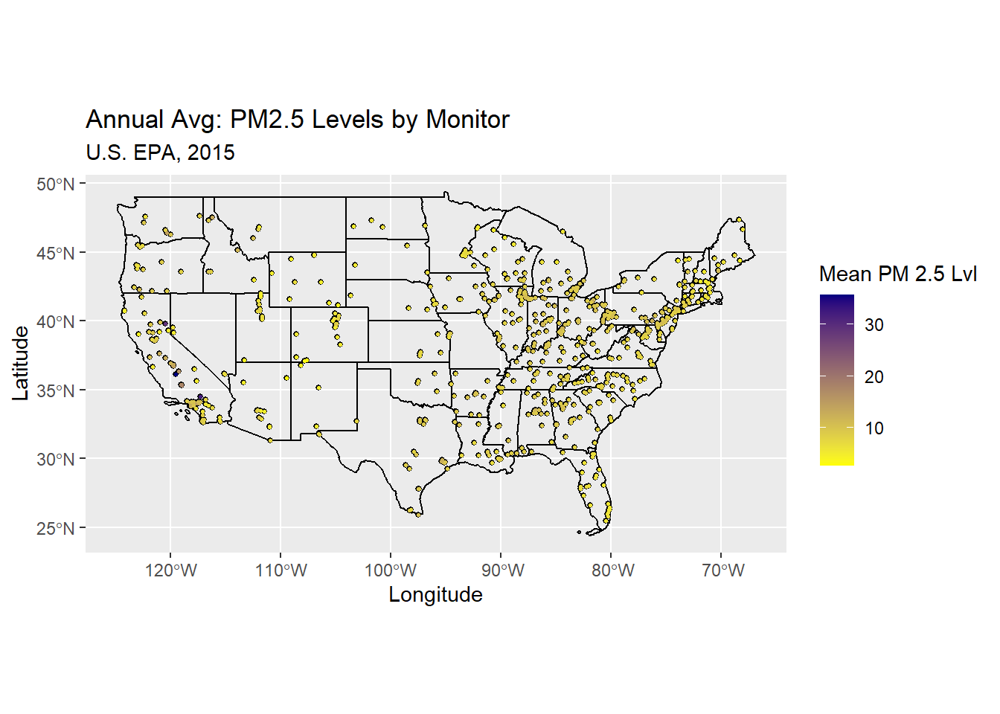
The CDC provides measured and modeled PM 2.5 data by county for the U.S., as depicted in Figure 2. They derive their data from daily PM 2.5 measurements produced by the EPA, then further model to infer measurements for areas where there are gaps in the data. Derivations are primarily based on the Downscaler (DS) model, which is “a statistical fusion of monitoring data and Community Multiscale Air Quality (CMAQ) outputs,” [@geograph]. While use of this data is convenient, a future iteration of this research will produce and employ a PM 2.5 inference model, which would be produced specifically for this research. Doing so would control for any unknowns that are introduced due to the limitations of using modeled data that is not easily reproducible.
One limitation of the air quality data used in this model is the use of annually summarized data. While useful, annual summaries may not be sensitive enough to capture acute changes in air quality, which pose a health risk (CITE?). This relationship may not be captured in the model if poor air quality days are infrequent enough to impact the mean. For simplicity, this research does not take seasonality into consideration and instead uses annual averages, which does not accurately reflect variation in air pollution ranges.
TALK ABOUT HOW THIS YEAR COMPARES TO OTHER YEARS
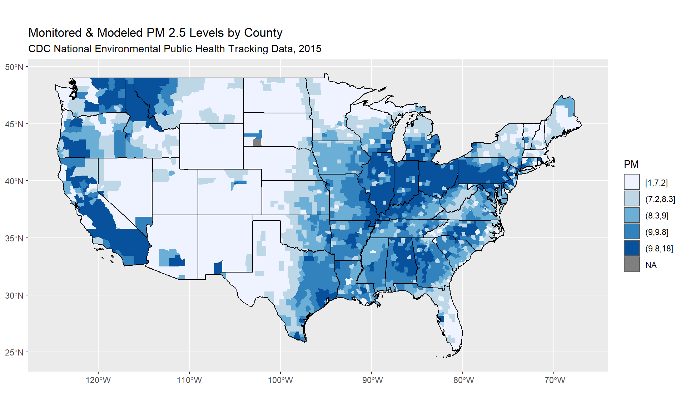
Climate data are included in this model to account for impacts of environmental factors on PM2.5 levels. Research by Zhang and colleagues comparing daily PM2.5 measurements against various daily climate indicators found a strong positive relationship between high temperatures with increased PM2.5 concentration, with the highest correlation found in rural areas. An overwhleming pattern of overlap between extreme high PM2.5 levels and extreme heat days was found in most weather monitors across the country (Zhang et al. 2017, 75). They also found that days with extremely low relative humidity were associated with a higher probability of extreme PM 2.5 concentration (Zhang et al. 2017, 77). This association is especially strong in the northern U.S. and Great Plains regions, which Zhang and colleagues attribute to relative humidity’s impact on particle formation due to power plant emissions and agricultural activities (Zhang et al. 2017, 75). Though Zhang and colleagues found strong, statistically significant relationships, they also note that complexities exist between PM2.5 concentration and climate factors. Bell and colleagues highlight this point succintly in their analysis of PM2.5 components, noting that “the PM2.5 mixture varies strongly by region and by season, and the degree of spatial and temporaly variability varies by component,” (“Spatial and Temporal Variation in PM2.5 Chemical Composition in the United States for Health Effects Studies,” n.d., 993). At any given time, variations in the mixture of PM2.5 components may magnify or subdue expected reactions with climatic events.
Climate can also impact health independently of its impact on air pollution. Research on cardiovascular and respiratory hospitalizations in Cyprus, Greece found significant correlations between increased hospitalizations and two climactic categories: “cold, cloudy days with increased levels of precipitation,” and “warm, rainy days with increased levels of water vapor in the atmosphere,” (Tsangari et al. 2016, 251). Their findings suggest depressed health on days when the climate causes discomfort: days when temperatures and humidity are high, as well as on cold days with increased precipitation. WRAP UP SENTENCE TO DRIVE HOME WHY CLIMATE IS AN IMPORTANT FACTOR.
For ease of interpretation, climate data are summarized by NOAA climate region. Figure 3 is included as a reference to show which states are included in each region.
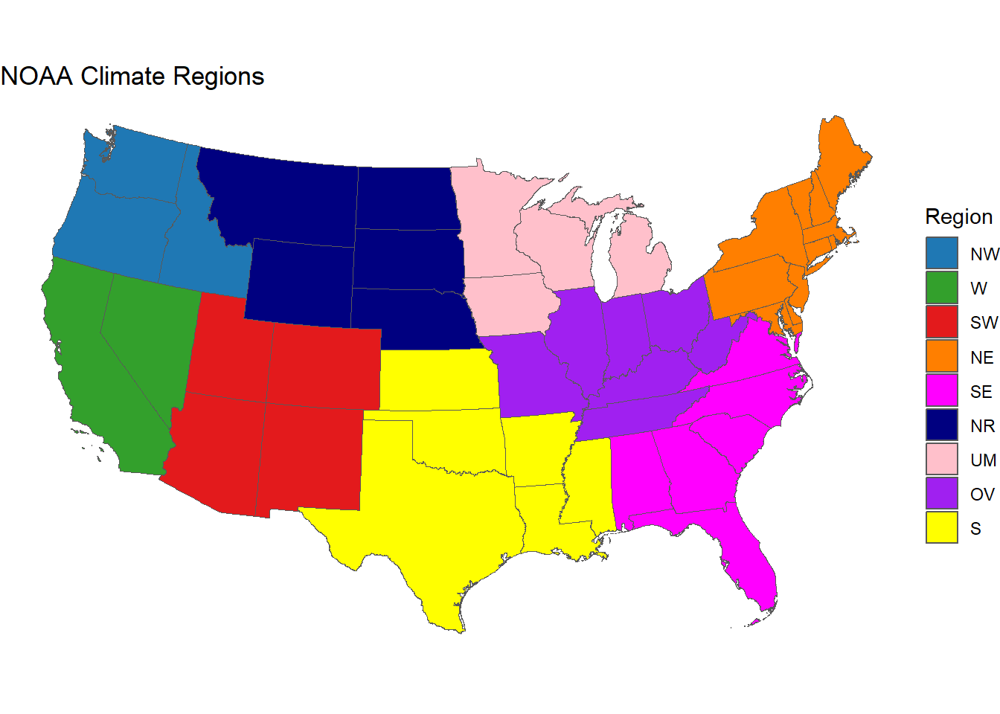
# A tibble: 9 x 2
reg_names states
* <chr> <chr>
1 NE PA, VT, MA, NH, DE, CT, NJ, MD, ME, RI, NY, DC
2 NR NE, SD, WY, MT, ND
3 NW WA, OR, ID
4 OV KY, TN, IN, IL, OH, MO, WV
5 S AR, MS, OK, LA, KS, TX
6 SE GA, SC, AL, NC, VA, FL
7 SW NM, CO, UT, AZ
8 UM IA, WI, MI, MN
9 W NV, CA Figure 4 displays climate variables of interest based on county groupings into NOAA climate regions. The box-and-whisker plots show the distribution of county-level climate in 2015. The top three plots show temperature trends in 2015 across the contiguous U.S. As expected, the areas with high average, maximum, and minimum temperatures are the South (S), Southeast (SE), and West (W) regions. The region with large variations in temperature indicators by county is the Southwest (SW). Though average temperatures for the region are lower than the other regions mentioned, there are a number of outliers whose average, minimum, and maximum temperatures in 2015 are significantly higher than the rest of the group. Climate regions with low minimum temperatures are the Northern Rockies (NR) and Upper Midwest (UM), whose mean minimum temperature is in the low thirties. By contrast, the South has the highest mean minimum temperature among its counties, averaging at fifty degrees.
The bottom three plots display annual cooling degree days, heating degree days, and precipitation. Degree days are an indicator of the “demand for energy to heat or cool houses and businesses,” indexed against a mean daily temperature of 65 degrees Fahrenheit (“Climate Prediction Center - Monitoring & Data: Weekly & Monthly Degree Day Summaries Explanation,” n.d.). Degree days are population weighted to better estimate the impact of temperature on human energy consumption (“Climate Prediction Center - Monitoring & Data: Weekly & Monthly Degree Day Summaries Explanation,” n.d.). The annual cooling and heating degree days are consistent with annual temperature trends. The relatively small interquartile ranges of cooling degree days by region suggest that cooling degree days are generally less varied, though there is a notable increase in high outliers in southern regions when comparing against the average annual temperature plot. The higher prevalence of these outliers implies two potential causes: either there is a small number of counties that have consistently higher temperatures than other counties in their respective regions or that areas with higher temperatures have high population densities (impacting the population weighting component of the degree day calculation). The annual precipitation plot shows that there is little variation in most regions: all but the Northwest (NW), South (S), and West (W) regions have fairly tight ranges. The Northwest shows the regional largest variance within its counties in 2015, encompassing counties on the low end when comparing across the entire contiguous U.S. while also including counties the extreme high end.
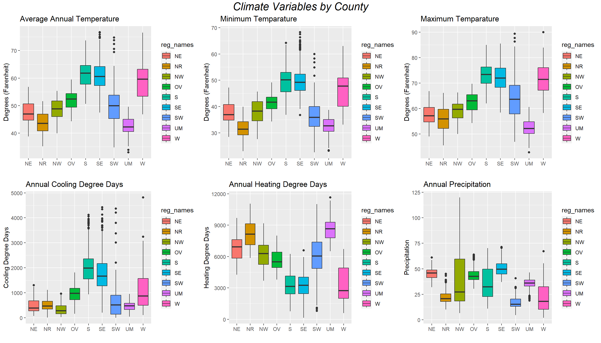
To determine which of these climate indicators may be significant in the model, the below figures explore the relationship between annual PM 2.5 concentration and the various climate indicators. Figure 5 plots the six climate variables against PM 2.5 concentration for all counties. While there certainly is variation in the data points for the six climate variables, the PM 2.5 concentration nationally is much more uniform, resulting in significant, but low positive correlations for each set of variables.
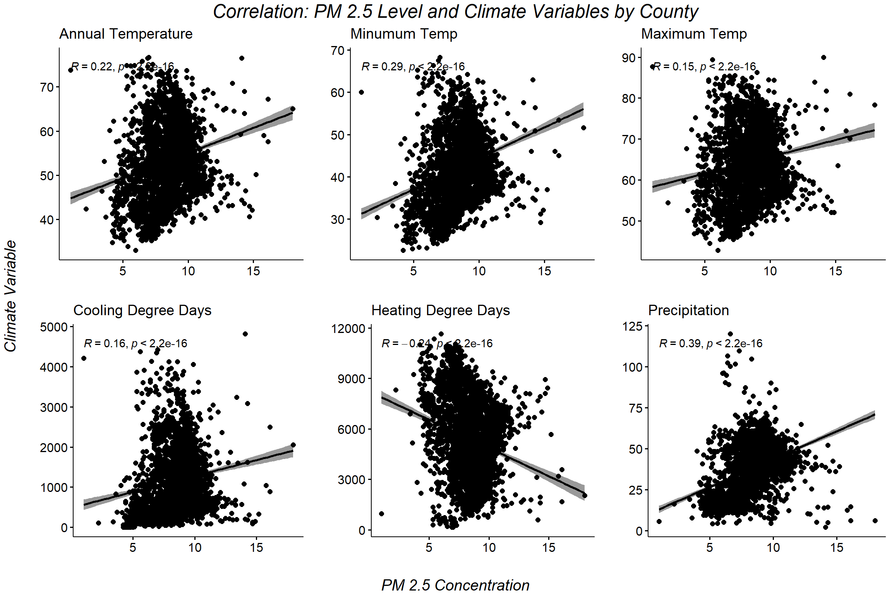
Plotting the data for the wide, national scope is not very meaningful. Instead, Figures 6 through 11 parses the data based on NOAA climate region to better evaluate nuances of the relationships between PM 2.5 concentration and climate variables. Notably, western regions (West, Northwest, and Southwest) have a smaller quantity of counties so they are grouped into one plot for the purposes of these visualizations.
Cooling degree days does not appear to be have a significant relationship with PM 2.5 concentration in 2015, though there is a significant, moderately positive relationship between the two variables in the Upper Midwest.
The correlations between PM 2.5 concentration and maximum temperature are significant positive in the Upper Midwest (R=0.68) and Northeast (R=0.5). Interestingly, in Ohio Valley the relationship is significant and moderately negative (R=-0.41). This indicates that in the Ohio Valley region, counties with lower maximum temperatures in 2015 also tended to have higher annual PM 2.5 levels. A visual inspection of the Ohio Valley plot reveals that there is a relatively wide range of maximum temperatures in the Ohio Valley region but a small and dense range of PM 2.5 concentrations in this area.
Heating degree days and PM 2.5 concentrations show similar relationships in the Upper Midwest region (R=0.73) and Ohio Valley (R = -0.39). The two variables in both of these regions show a significant relationship, though in the Upper Midwest, that relationship is strongly positive, and in Ohio Valley, it is moderately negative. The other regions do not seem to have significant relationships.
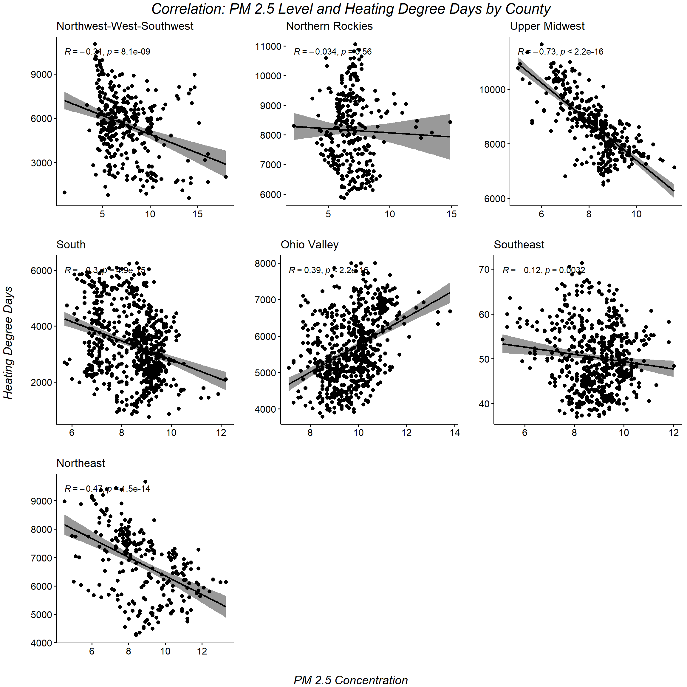
The Upper Midwest region and the South both show significant, positive relationships between minimum temperature and PM 2.5 concentration.
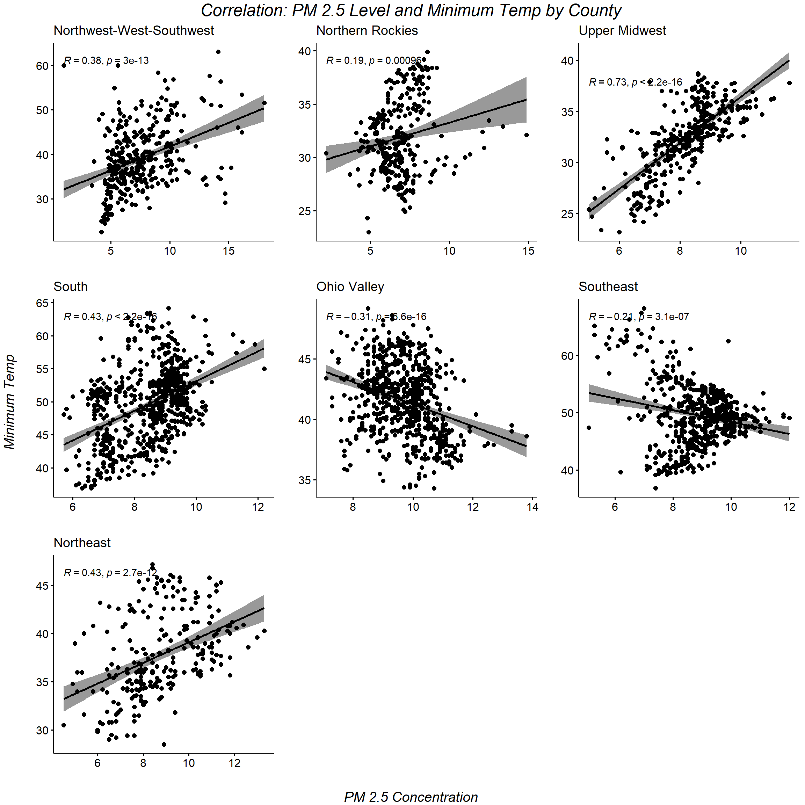
Precipitation levels appear to have a significant and fairly strong positive relationship with PM 2.5 concentration in the South (R=0.69) and Northern Rockies (R=0.57). WAS THIS ANTICIPATED?
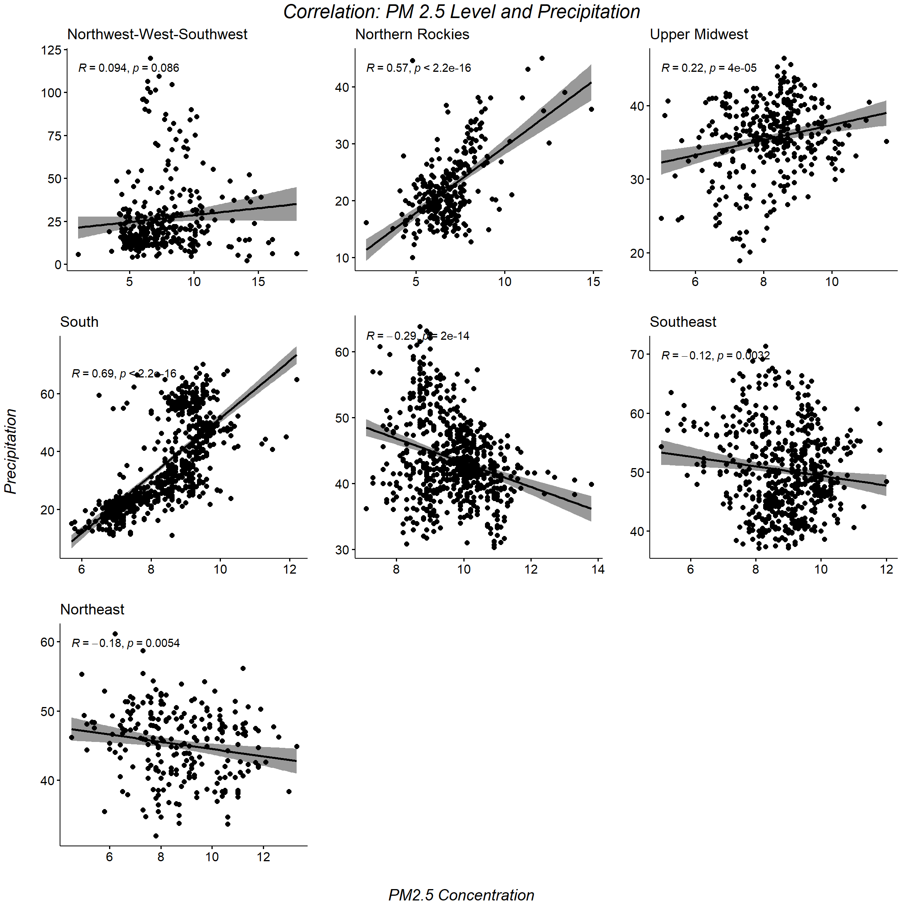
Respiratory health is measured by age-adjusted mortality rates by county, accessed through the Center for Disease Control and Prevention’s (CDC) WONDER database. The first data set extracted is all-age, all-cause age-adjusted mortality rate by county for the three-year period from 2014 through 2016. Data were further filtered based on primary reported cause of death based on the ICD-10 code range I00-I99, which encompasses cardiovascular diseases and J00-J98, respiratory diseases (“CDC WONDER,” n.d.). Previous research exposing correlations between air pollution and mortality have focused on the same set of diagnostic codes (O’Neill et al. 2008), (Wong et al. 2008). One limitation of data on the primary cause of death is that health can be influenced by a variety of issues. When there are multiple causes of death, those multiple causes are noted but for this purpose, only the primary cause is used to characterize the cardiovascular or respiratory disease-related death population. Therefore, the data would be missing those who had respiratory illnesses as a contributing factor but not the primary cause. It would be interesting to better analyze this population to see if there are trends that would support the inclusion of respiratory disease as a cause of death (and not just the primary cause), but for this research, honing in on the primary cause of death should be sufficient. Another limitation is that the diagnostic classes used in this model are broad. It is an intentional choice to cast a wide net on mortality causes because air pollution’s impact on individual health can manifest in a variety of ways. However, the shortcoming of this tactic is that it introduces more data that may potentially be unrelated to air pollution. This is something to be mindful of when reviewing the results of data modeling.
DESCRIBE DATA
The below figures plot age-adjusted mortality rates (Figure X: All ages and Figure Y: 65 and over population only) against 2015 maximum temperatures by county. There is a significant, positive relationship in the Ohio Valley area, indicating that counties with higher maximum temperatures tended to have higher age-adjusted mortality rates. This positive relationship is lower in the 65 and over population.
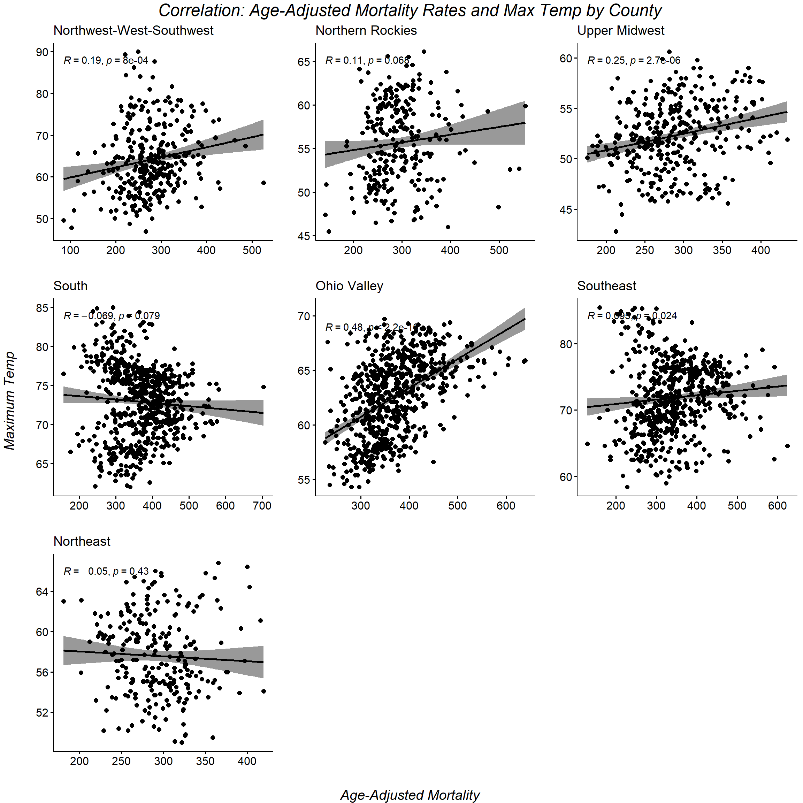
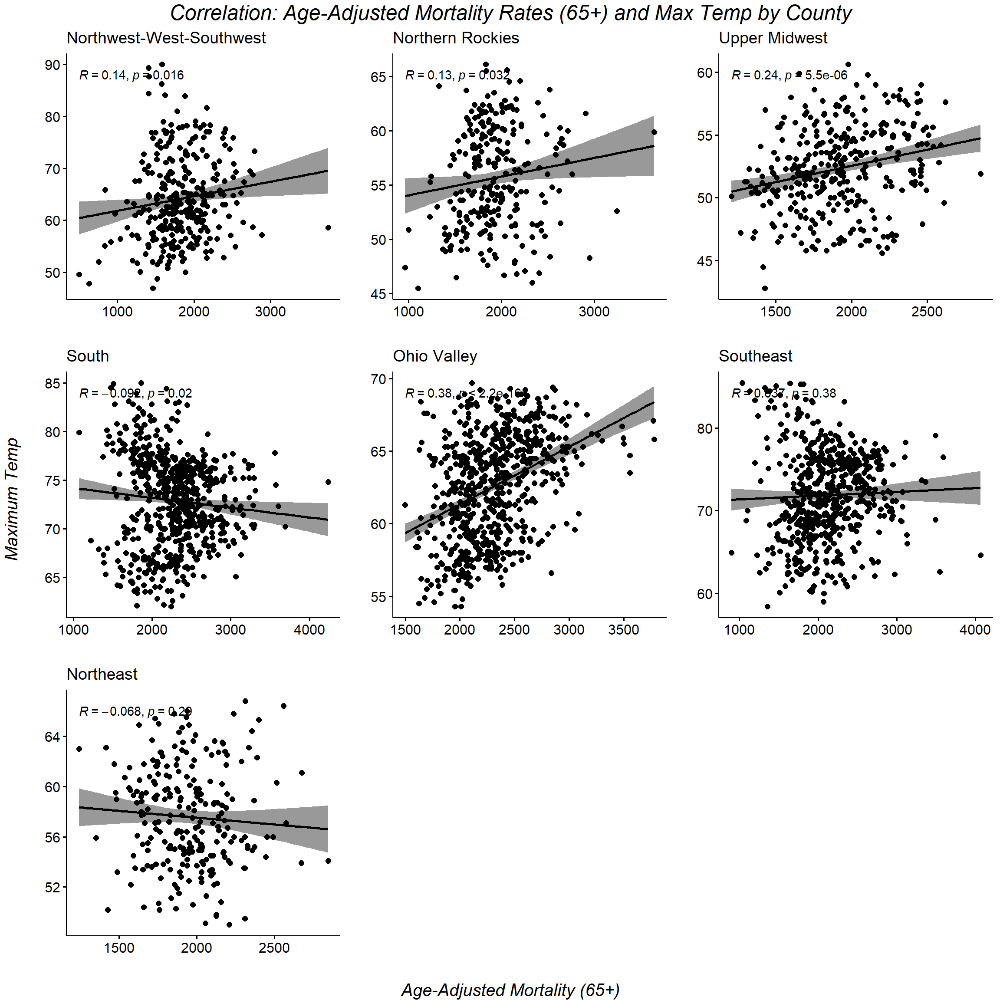
The next two figures plot age-adjusted mortality rates (Figure X: All ages and Figure Y: 65 and over population only) against 2015 precipitaion levels by county. There is a significant, positive relationship in both the South and Ohio Valley areas, indicating that counties with higher precipitation levels tended to have higher age-adjusted mortality rates. As with the maximum temperature findings, there positive relationships are lower in the 65 and over population.
To further characterize county populations, demographic and behavioral data are consulted. 2015 data on age-adjusted adult smoking rates by county are extracted from the University of Wisconsin Public Health Institute’s County Health Rankings. This data are consulted to normalize out any distortions caused by smoking habits by county. However, prevalence rates do not capture the severity of tobacco use by individual. Severity of smoking habits are not considered in this model. County Health Rankings’ source for its smoking data is the CDC’s Behavioral Risk Factor Surveillance System (BRFSS) (“Adult Smoking,” n.d.). County Health Rankings data aggregates other useful variables that are used in their model. Adult obesity rates by county, sourced from BRFSS data, are also used. One limitation to the BRFSS is that data is collected from surveys, then extrapolated to characterize county-level summaries. The conduction of surveys and extrapolation process leave room for error so is noted for transparency. Another data point extracted from County Health Rankings is the percent of the population that is uninsured (Source: U.S. Census Bureau’s Small Area Health Insurance Estimates (SAHIE)) (“2022 Measures,” n.d.). SAHIE’s percent uninsured estimates the percent of the population that is 65 and under who do not have health insurance (“Uninsured,” n.d.). According to the U.S. Census Bureau, “SAHIE uses statistical models that combine survey data from the American Community Survey (ACS) with administrate records data and Census 2010 data,” (Bureau, n.d.). The benefit of SAHIE’s modeling approach is that it attempts to control for estimates for small areas where data is more sparse (Bureau, n.d.). As with any modeled data, a notable risk is the reliance on the robustness of the U.S. Census Bureau’s model, though the Census Bureau does provide margins of error for their model results. Other demographic data are obtained from the U.S. Census Bureau’s American Community Survey (ACS) 5-year estimates. 2016 data for following variables are used in this model: Percent poverty, percent Black, percent Hispanic, urbanization, and education statistics. ACS data are obtained through the Census API, accessed through R Studio.
Land cover data used in this model are originally sourced from the National Land Cover Database’s (NLCD). The International Public Use Microdata Series (IPUMS) released county-level summaries of NLCD land cover data, which are displayed in the ensuing plots. Per IPUMS’ annotations on methodology, NLCD data were layered with census geographic polygons to calculate the area covered by each land class (“Environmental Summaries | IPUMS NHGIS,” n.d.). Land cover classifications are determined by NLCD using a modified Anderson Land Cover Classification System (“National Land Cover Database Class Legend and Description | Multi-Resolution Land Characteristics (MRLC) Consortium,” n.d.). A description of NLCD’s land cover classifications are denoted in the data table below. Data used in this model reflect 2011 land cover data summarized by county geographic boundaries in the U.S. Census Bureau’s 2015 data set.

Land cover data are summarized into the following major classes: wetlands (woody and emergent herbaceous), planted (pasture, cultivated crops), herbaceous (grassland / herbaceous), shrubland (shrub/scrub), forest (deciduous, evergreen, and mixed forest), barren (barren land - rocks and clay), developed (low, mid, and high intensity development), and water (open water, perennial ice/snow). National county-level distribution of proportional land cover are displayed in FIGURE WHAT below. The planted (pasture, cultivated crops) and forest land cover types have even and long distributions, indicating that proportions of land dedicated to these land cover types vary widely by county and are not normally distributed. Other land cover types are closer to normal distributions. Notably, the first quartile of wetlands, herbaceous, shrubland, barren, and water are around 0%, indicating that around one quarter of counties in the contiguous U.S. are not at all represented by at least one of those land cover types.
LONG TAILS
This research uses regression modeling on three NOAA climate regions to test if creating models for each region produces significant results. The region-based modeling using NOAA’s climatically consistent region definitions draws from research on by Simon and colleagues. Simon and colleagues justify their use of NOAA climate regions by acknowledging that ozone patterns are partially determined by temperature and precipitation (2015, 188). Additionally, they note that climate regions generally group areas with similar emissions types and similar trends in temporal variation due to daylight and season (Simon et al. 2015, 188). By modeling for each region, I attempt to normalize out some of the variation due to climate, seasonality, and emissions type which should remove some noise from the models.
Calculating the entropy index: Let Pj be the percentage each of land use type j in the county, and let n be the number of land use types j.
\[ Entropy = -[\sum_{j=1}^n p_j \ln p_j]/ln(n) \]
Data are first approximated at a county level. Air quality data is captured by monitors, whose locations are indicated in the EPA’s data files. In order to spread air quality metrics over space, spatial interpolation is used (add specifications). Land cover data is also approximated at the county level by using R to quantify the area of major land cover types that are measured in each county.REMOVE?
The dependent variable that is being used as a proxy for health is age-adjusted mortality rate for respiratory diseases. After a review of the dependent and independent variables, OLS regression models are consulted. The OLS regression model will estimate the effect of the independent variables on the dependent variable. Different combinations of variables are tested to evaluate what creates the best model, and results are evaluated for statistical significance.
A linear regression model is then evaluated for spatial autocorrelation. The regression model depends on independence and heteroskedasticity of residuals. If spatial autocorrelation is present, then both rules are broken. Spatial autocorrelation is tested using the Global Moran’s I test, followed by mapping the Local Moran’s I. Spatial clustering is revealed by the Local Indicator of Spatial Association (LISA) map. The Lagrange Multiplier test is consulted to determine if spatial error or spatial lag is driving spatial autocorrelation in the model. Based on the Lagrange Multiplier results, the spatial [lag/error] model is used to try to produce a better model.
1.3 Results
Call:
lm(formula = AAMR_all_ICDI_use ~ pct_white + pct_hispanic + pct_bach +
pct_pov + PM2.5 + pct_smokers + pct_obese + entropy_dev +
TMAX + PCP, data = c_df6_a)
Residuals:
Min 1Q Median 3Q Max
-2.5741 -0.4135 -0.0256 0.3783 3.7409
Coefficients:
Estimate Std. Error t value Pr(>|t|)
(Intercept) -2.666e-16 1.231e-02 0.000 1.00000
pct_white 1.285e-01 1.715e-02 7.494 8.77e-14 ***
pct_hispanic -2.093e-01 1.702e-02 -12.295 < 2e-16 ***
pct_bach -2.715e-01 1.935e-02 -14.030 < 2e-16 ***
pct_pov 1.635e-01 2.048e-02 7.982 2.05e-15 ***
PM2.5 2.344e-02 1.389e-02 1.687 0.09170 .
pct_smokers 2.366e-01 2.087e-02 11.334 < 2e-16 ***
pct_obese 1.219e-01 1.910e-02 6.382 2.03e-10 ***
entropy_dev 6.884e-02 1.546e-02 4.452 8.83e-06 ***
TMAX 2.614e-01 1.660e-02 15.742 < 2e-16 ***
PCP -5.042e-02 1.626e-02 -3.100 0.00195 **
---
Signif. codes: 0 '***' 0.001 '**' 0.01 '*' 0.05 '.' 0.1 ' ' 1
Residual standard error: 0.6669 on 2926 degrees of freedom
Multiple R-squared: 0.5568, Adjusted R-squared: 0.5553
F-statistic: 367.6 on 10 and 2926 DF, p-value: < 2.2e-16
Call:
lm(formula = AAMR_all_ICDI65_use ~ pct_white + pct_hispanic +
pct_bach + pct_pov + PM2.5 + pct_smokers + pct_obese + entropy_dev +
TMAX + PCP, data = c_df6_b)
Residuals:
Min 1Q Median 3Q Max
-3.0652 -0.4639 -0.0134 0.4111 4.6745
Coefficients:
Estimate Std. Error t value Pr(>|t|)
(Intercept) -3.265e-16 1.406e-02 0.000 1.000000
pct_white 1.663e-01 1.960e-02 8.488 < 2e-16 ***
pct_hispanic -1.701e-01 1.946e-02 -8.743 < 2e-16 ***
pct_bach -2.761e-01 2.212e-02 -12.484 < 2e-16 ***
pct_pov 9.295e-02 2.341e-02 3.971 7.32e-05 ***
PM2.5 4.593e-02 1.588e-02 2.893 0.003845 **
pct_smokers 2.142e-01 2.386e-02 8.980 < 2e-16 ***
pct_obese 1.307e-01 2.184e-02 5.984 2.45e-09 ***
entropy_dev 6.879e-02 1.767e-02 3.893 0.000101 ***
TMAX 2.041e-01 1.898e-02 10.755 < 2e-16 ***
PCP -7.054e-02 1.859e-02 -3.795 0.000151 ***
---
Signif. codes: 0 '***' 0.001 '**' 0.01 '*' 0.05 '.' 0.1 ' ' 1
Residual standard error: 0.7622 on 2926 degrees of freedom
Multiple R-squared: 0.4211, Adjusted R-squared: 0.4191
F-statistic: 212.8 on 10 and 2926 DF, p-value: < 2.2e-16
Global Moran I for regression residuals
data:
model: lm(formula = AAMR_all_ICDI_use ~ pct_white + pct_hispanic +
pct_bach + pct_pov + PM2.5 + pct_smokers + pct_obese + entropy_dev +
TMAX + PCP, data = c_df6_a)
weights: df_1a_wt6
Moran I statistic standard deviate = 25.479, p-value < 2.2e-16
alternative hypothesis: greater
sample estimates:
Observed Moran I Expectation Variance
0.2586769183 -0.0024049180 0.0001050034
Global Moran I for regression residuals
data:
model: lm(formula = AAMR_all_ICDI_use ~ pct_white + pct_hispanic +
pct_bach + pct_pov + PM2.5 + pct_smokers + pct_obese + entropy_dev +
TMAX + PCP, data = c_df6_a)
weights: df_1a_wt10
Moran I statistic standard deviate = 30.644, p-value < 2.2e-16
alternative hypothesis: greater
sample estimates:
Observed Moran I Expectation Variance
2.397104e-01 -2.305497e-03 6.237292e-05
Global Moran I for regression residuals
data:
model: lm(formula = AAMR_all_ICDI65_use ~ pct_white + pct_hispanic +
pct_bach + pct_pov + PM2.5 + pct_smokers + pct_obese + entropy_dev +
TMAX + PCP, data = c_df6_b)
weights: df_1b_wt6
Moran I statistic standard deviate = 20.847, p-value < 2.2e-16
alternative hypothesis: greater
sample estimates:
Observed Moran I Expectation Variance
0.2112143360 -0.0024049180 0.0001050034
Global Moran I for regression residuals
data:
model: lm(formula = AAMR_all_ICDI65_use ~ pct_white + pct_hispanic +
pct_bach + pct_pov + PM2.5 + pct_smokers + pct_obese + entropy_dev +
TMAX + PCP, data = c_df6_b)
weights: df_1b_wt10
Moran I statistic standard deviate = 26.008, p-value < 2.2e-16
alternative hypothesis: greater
sample estimates:
Observed Moran I Expectation Variance
2.030931e-01 -2.305497e-03 6.237292e-05
Lagrange multiplier diagnostics for spatial dependence
data:
model: lm(formula = AAMR_all_ICDI_use ~ pct_white + pct_hispanic +
pct_bach + pct_pov + PM2.5 + pct_smokers + pct_obese + entropy_dev +
TMAX + PCP, data = c_df6_a)
weights: df_1a_wt6
LMerr = 628.6, df = 1, p-value < 2.2e-16
Lagrange multiplier diagnostics for spatial dependence
data:
model: lm(formula = AAMR_all_ICDI_use ~ pct_white + pct_hispanic +
pct_bach + pct_pov + PM2.5 + pct_smokers + pct_obese + entropy_dev +
TMAX + PCP, data = c_df6_a)
weights: df_1a_wt6
LMlag = 525.08, df = 1, p-value < 2.2e-16
Lagrange multiplier diagnostics for spatial dependence
data:
model: lm(formula = AAMR_all_ICDI_use ~ pct_white + pct_hispanic +
pct_bach + pct_pov + PM2.5 + pct_smokers + pct_obese + entropy_dev +
TMAX + PCP, data = c_df6_a)
weights: df_1a_wt6
RLMerr = 124.44, df = 1, p-value < 2.2e-16
Lagrange multiplier diagnostics for spatial dependence
data:
model: lm(formula = AAMR_all_ICDI_use ~ pct_white + pct_hispanic +
pct_bach + pct_pov + PM2.5 + pct_smokers + pct_obese + entropy_dev +
TMAX + PCP, data = c_df6_a)
weights: df_1a_wt6
RLMlag = 20.912, df = 1, p-value = 4.809e-06
Lagrange multiplier diagnostics for spatial dependence
data:
model: lm(formula = AAMR_all_ICDI65_use ~ pct_white + pct_hispanic +
pct_bach + pct_pov + PM2.5 + pct_smokers + pct_obese + entropy_dev +
TMAX + PCP, data = c_df6_b)
weights: df_1b_wt6
LMerr = 419.09, df = 1, p-value < 2.2e-16
Lagrange multiplier diagnostics for spatial dependence
data:
model: lm(formula = AAMR_all_ICDI65_use ~ pct_white + pct_hispanic +
pct_bach + pct_pov + PM2.5 + pct_smokers + pct_obese + entropy_dev +
TMAX + PCP, data = c_df6_b)
weights: df_1b_wt6
LMlag = 366.93, df = 1, p-value < 2.2e-16
Lagrange multiplier diagnostics for spatial dependence
data:
model: lm(formula = AAMR_all_ICDI65_use ~ pct_white + pct_hispanic +
pct_bach + pct_pov + PM2.5 + pct_smokers + pct_obese + entropy_dev +
TMAX + PCP, data = c_df6_b)
weights: df_1b_wt6
RLMerr = 60.694, df = 1, p-value = 6.661e-15
Lagrange multiplier diagnostics for spatial dependence
data:
model: lm(formula = AAMR_all_ICDI65_use ~ pct_white + pct_hispanic +
pct_bach + pct_pov + PM2.5 + pct_smokers + pct_obese + entropy_dev +
TMAX + PCP, data = c_df6_b)
weights: df_1b_wt6
RLMlag = 8.5382, df = 1, p-value = 0.003478
Call:errorsarlm(formula = AAMR_all_ICDI_use ~ pct_white + pct_black +
pct_hispanic + pct_bach + pct_pov + PM2.5 + pct_smokers +
pct_obese + pct_uninsured + entropy_dev + TMAX + PCP, data = c_df6_a,
listw = df_1a_wt6)
Residuals:
Min 1Q Median 3Q Max
-2.384224 -0.359187 -0.029489 0.303276 3.589407
Type: error
Coefficients: (asymptotic standard errors)
Estimate Std. Error z value Pr(>|z|)
(Intercept) -0.0071987 0.0229678 -0.3134 0.7539552
pct_white 0.1078293 0.0315228 3.4207 0.0006247
pct_black 0.0149632 0.0335103 0.4465 0.6552175
pct_hispanic -0.1732208 0.0227760 -7.6054 2.842e-14
pct_bach -0.2812653 0.0197830 -14.2175 < 2.2e-16
pct_pov 0.1293695 0.0220006 5.8803 4.096e-09
PM2.5 0.0179988 0.0181644 0.9909 0.3217438
pct_smokers 0.2376938 0.0254756 9.3303 < 2.2e-16
pct_obese 0.0947924 0.0202008 4.6925 2.699e-06
pct_uninsured -0.0270454 0.0216683 -1.2482 0.2119734
entropy_dev 0.0600401 0.0187666 3.1993 0.0013776
TMAX 0.2489719 0.0275814 9.0268 < 2.2e-16
PCP -0.0027150 0.0237715 -0.1142 0.9090700
Lambda: 0.51501, LR test value: 435.09, p-value: < 2.22e-16
Asymptotic standard error: 0.023059
z-value: 22.334, p-value: < 2.22e-16
Wald statistic: 498.81, p-value: < 2.22e-16
Log likelihood: -2754.252 for error model
ML residual variance (sigma squared): 0.36434, (sigma: 0.6036)
Number of observations: 2937
Number of parameters estimated: 15
AIC: 5538.5, (AIC for lm: 5971.6)
Call:errorsarlm(formula = AAMR_all_ICDI65_use ~ pct_white + pct_black +
pct_hispanic + pct_bach + pct_pov + PM2.5 + pct_smokers +
pct_obese + pct_uninsured + entropy_dev + TMAX + PCP, data = c_df6_b,
listw = df_1b_wt6)
Residuals:
Min 1Q Median 3Q Max
-2.518992 -0.430677 -0.025433 0.364461 4.640839
Type: error
Coefficients: (asymptotic standard errors)
Estimate Std. Error z value Pr(>|z|)
(Intercept) -0.0058994 0.0234787 -0.2513 0.8016067
pct_white 0.1295484 0.0360379 3.5948 0.0003247
pct_black -0.0360423 0.0382422 -0.9425 0.3459493
pct_hispanic -0.1345966 0.0255904 -5.2596 1.443e-07
pct_bach -0.2817460 0.0230175 -12.2405 < 2.2e-16
pct_pov 0.0745361 0.0255741 2.9145 0.0035624
PM2.5 0.0326655 0.0203716 1.6035 0.1088291
pct_smokers 0.2309473 0.0288773 7.9975 1.332e-15
pct_obese 0.1092854 0.0234750 4.6554 3.233e-06
pct_uninsured -0.0333344 0.0246822 -1.3505 0.1768404
entropy_dev 0.0678911 0.0212256 3.1986 0.0013812
TMAX 0.2055553 0.0297162 6.9173 4.604e-12
PCP -0.0240531 0.0259575 -0.9266 0.3541159
Lambda: 0.44091, LR test value: 294.85, p-value: < 2.22e-16
Asymptotic standard error: 0.024981
z-value: 17.65, p-value: < 2.22e-16
Wald statistic: 311.52, p-value: < 2.22e-16
Log likelihood: -3216.018 for error model
ML residual variance (sigma squared): 0.50599, (sigma: 0.71133)
Number of observations: 2937
Number of parameters estimated: 15
AIC: 6462, (AIC for lm: 6754.9)Simple feature collection with 2937 features and 14 fields
Geometry type: MULTIPOLYGON
Dimension: XY
Bounding box: xmin: -124.7631 ymin: 24.5231 xmax: -66.9499 ymax: 49.38436
Geodetic CRS: NAD83
First 10 features:
cofips AAMR_all_ICDI_use PM2.5 PCP TMAX entropy_dev
1 19107 -0.70497244 0.4192279 0.2471291 -0.877798531 -0.429760464
2 20093 -0.60991069 -0.9750542 -1.4842263 0.478224867 -0.942031520
3 20123 -1.21460901 -0.5507075 -0.9583921 0.060117653 -0.528880777
4 20187 -1.64898837 -1.2175381 -1.7406474 0.546026037 -1.515494533
5 21005 0.48329937 0.9041956 0.4885068 -0.018983712 -0.315678101
6 21029 -0.49900532 1.3891633 0.5630399 0.060117653 0.175349910
7 21049 0.65097773 0.7829537 0.4385902 -0.030283907 -0.493768781
8 21059 -0.05010264 0.7223327 0.3421758 0.071417848 -0.065362814
9 21063 -0.38281875 0.1161231 0.4064521 0.094018238 -1.170121096
10 21093 -0.41846690 0.4798489 0.5951780 -0.007683517 -0.008980814
pct_smokers pct_obese pct_uninsured pct_white pct_black pct_hispanic
1 -0.3740834 -0.4798335 -1.2553421 0.8907311 -0.6323259 -0.5570817
2 -0.4819561 -0.1456560 0.5089324 -0.1128391 -0.5744462 1.5415337
3 -0.9404149 0.2553569 -1.2153545 0.8731369 -0.6092770 -0.5129375
4 -0.5089242 -0.2793270 1.4671859 -0.1353533 -0.5752082 1.7112193
5 0.7585795 0.4335849 -0.4819141 0.7326895 -0.4597412 -0.5478702
6 0.4619297 0.3667494 -0.7262406 0.7898215 -0.5905383 -0.5381795
7 1.3518791 0.2330784 -0.4580884 0.5681504 -0.2793217 -0.4620414
8 0.6237386 -0.4798335 -0.6720167 0.4920393 -0.3171274 -0.4629122
9 2.6193828 0.7677624 0.4056513 0.8486481 -0.4743572 -0.6447474
10 0.9473566 0.1216860 -0.5175263 -0.2349313 0.1547899 -0.2656698
pct_bach pct_pov geometry
1 -0.1439527 -0.52799786 MULTIPOLYGON (((-92.41199 4...
2 -1.1094730 -0.59536498 MULTIPOLYGON (((-101.5419 3...
3 0.8274341 -0.78802549 MULTIPOLYGON (((-98.49007 3...
4 0.9133003 -1.41127742 MULTIPOLYGON (((-102.0419 3...
5 -0.1664797 -0.76320602 MULTIPOLYGON (((-85.16919 3...
6 -0.7919292 -0.93383744 MULTIPOLYGON (((-85.93606 3...
7 0.1297092 -0.17339722 MULTIPOLYGON (((-84.34698 3...
8 -0.1795602 -0.01768661 MULTIPOLYGON (((-87.40529 3...
9 -1.4157052 2.10473624 MULTIPOLYGON (((-83.27005 3...
10 -0.1696155 -0.34285102 MULTIPOLYGON (((-86.27756 3...Simple feature collection with 2937 features and 14 fields
Geometry type: MULTIPOLYGON
Dimension: XY
Bounding box: xmin: -124.7631 ymin: 24.5231 xmax: -66.9499 ymax: 49.38436
Geodetic CRS: NAD83
First 10 features:
cofips AAMR_all_ICDI65_use PM2.5 PCP TMAX entropy_dev
1 19107 -0.36876333 0.4192279 0.2471291 -0.877798531 -0.429760464
2 20093 -1.11898275 -0.9750542 -1.4842263 0.478224867 -0.942031520
3 20123 -1.70205733 -0.5507075 -0.9583921 0.060117653 -0.528880777
4 20187 -1.11511812 -1.2175381 -1.7406474 0.546026037 -1.515494533
5 21005 0.69497341 0.9041956 0.4885068 -0.018983712 -0.315678101
6 21029 -0.60208978 1.3891633 0.5630399 0.060117653 0.175349910
7 21049 0.61405792 0.7829537 0.4385902 -0.030283907 -0.493768781
8 21059 -0.06007678 0.7223327 0.3421758 0.071417848 -0.065362814
9 21063 -1.11753351 0.1161231 0.4064521 0.094018238 -1.170121096
10 21093 -0.55064202 0.4798489 0.5951780 -0.007683517 -0.008980814
pct_smokers pct_obese pct_uninsured pct_white pct_black pct_hispanic
1 -0.3740834 -0.4798335 -1.2553421 0.8907311 -0.6323259 -0.5570817
2 -0.4819561 -0.1456560 0.5089324 -0.1128391 -0.5744462 1.5415337
3 -0.9404149 0.2553569 -1.2153545 0.8731369 -0.6092770 -0.5129375
4 -0.5089242 -0.2793270 1.4671859 -0.1353533 -0.5752082 1.7112193
5 0.7585795 0.4335849 -0.4819141 0.7326895 -0.4597412 -0.5478702
6 0.4619297 0.3667494 -0.7262406 0.7898215 -0.5905383 -0.5381795
7 1.3518791 0.2330784 -0.4580884 0.5681504 -0.2793217 -0.4620414
8 0.6237386 -0.4798335 -0.6720167 0.4920393 -0.3171274 -0.4629122
9 2.6193828 0.7677624 0.4056513 0.8486481 -0.4743572 -0.6447474
10 0.9473566 0.1216860 -0.5175263 -0.2349313 0.1547899 -0.2656698
pct_bach pct_pov geometry
1 -0.1439527 -0.52799786 MULTIPOLYGON (((-92.41199 4...
2 -1.1094730 -0.59536498 MULTIPOLYGON (((-101.5419 3...
3 0.8274341 -0.78802549 MULTIPOLYGON (((-98.49007 3...
4 0.9133003 -1.41127742 MULTIPOLYGON (((-102.0419 3...
5 -0.1664797 -0.76320602 MULTIPOLYGON (((-85.16919 3...
6 -0.7919292 -0.93383744 MULTIPOLYGON (((-85.93606 3...
7 0.1297092 -0.17339722 MULTIPOLYGON (((-84.34698 3...
8 -0.1795602 -0.01768661 MULTIPOLYGON (((-87.40529 3...
9 -1.4157052 2.10473624 MULTIPOLYGON (((-83.27005 3...
10 -0.1696155 -0.34285102 MULTIPOLYGON (((-86.27756 3...Bandwidth: 2100.907 CV score: 7381621
Bandwidth: 3395.945 CV score: 7478996
Bandwidth: 1300.529 CV score: 7181253
Bandwidth: 805.8689 CV score: 6862100
Bandwidth: 500.1519 CV score: 6518954
Bandwidth: 311.2084 CV score: 6244912
Bandwidth: 194.4349 CV score: 6189809
Bandwidth: 179.1071 CV score: 6227033
Bandwidth: 242.0757 CV score: 6166173
Bandwidth: 268.482 CV score: 6187504
Bandwidth: 232.3426 CV score: 6163047
Bandwidth: 225.2808 CV score: 6162862
Bandwidth: 228.0678 CV score: 6162707
Bandwidth: 228.1278 CV score: 6162707
Bandwidth: 228.0914 CV score: 6162707
Bandwidth: 228.0913 CV score: 6162707
Bandwidth: 228.0913 CV score: 6162707
Bandwidth: 228.0914 CV score: 6162707
Bandwidth: 228.0913 CV score: 6162707 Bandwidth: 2100.907 CV score: 288321850
Bandwidth: 3395.945 CV score: 291835210
Bandwidth: 1300.529 CV score: 281339925
Bandwidth: 805.8689 CV score: 270778973
Bandwidth: 500.1519 CV score: 260587822
Bandwidth: 311.2084 CV score: 254069108
Bandwidth: 194.4349 CV score: 256615412
Bandwidth: 312.0184 CV score: 254091503
Bandwidth: 278.745 CV score: 253400126
Bandwidth: 246.5414 CV score: 253460908
Bandwidth: 265.3562 CV score: 253310551
Bandwidth: 264.7132 CV score: 253309928
Bandwidth: 263.8472 CV score: 253309671
Bandwidth: 263.9474 CV score: 253309667
Bandwidth: 263.9501 CV score: 253309667
Bandwidth: 263.9499 CV score: 253309667
Bandwidth: 263.9498 CV score: 253309667
Bandwidth: 263.9499 CV score: 253309667
Bandwidth: 263.9499 CV score: 253309667 Call:
gwr(formula = AAMR_all_ICDI_use ~ pct_white + pct_black + pct_hispanic +
pct_bach + pct_pov + PM2.5 + pct_smokers + pct_obese + pct_uninsured +
entropy_dev + TMAX + PCP, data = c_gwr2_a, bandwidth = gwr_a,
hatmatrix = T, se.fit = T, cl = cl)
Kernel function: gwr.Gauss
Fixed bandwidth: 228.0913
Summary of GWR coefficient estimates at data points:
Min. 1st Qu. Median 3rd Qu. Max.
X.Intercept. -3.8026e+02 -9.3606e+01 4.1218e+01 2.9597e+02 1.1485e+03
pct_white -3.4284e+02 -3.5726e+01 4.8318e+01 1.2934e+02 3.1139e+02
pct_black -7.5543e+02 -7.0115e+01 6.8643e+01 1.6835e+02 1.6256e+03
pct_hispanic -3.3704e+02 -1.4288e+02 -7.9919e+01 -1.9212e+01 1.6926e+02
pct_bach -2.6053e+03 -8.3626e+02 -6.4875e+02 -4.5734e+02 1.7215e+02
pct_pov -5.1727e+02 1.2677e+02 2.6363e+02 3.4641e+02 6.5707e+02
PM2.5 -9.7359e+00 -1.0112e+00 7.8200e-01 2.4043e+00 1.2785e+01
pct_smokers -5.9459e+00 2.0655e+00 3.6544e+00 5.6150e+00 1.4194e+01
pct_obese -1.4681e+01 7.9686e-01 1.5307e+00 2.2548e+00 6.3553e+00
pct_uninsured -1.2748e+01 -3.1928e+00 -1.2285e+00 1.0782e+00 5.1809e+00
entropy_dev -1.4956e+02 -2.7055e+00 3.4799e+01 7.5528e+01 1.2574e+02
TMAX -8.1167e+00 -6.6412e-02 1.7401e+00 2.9342e+00 6.8516e+00
PCP -3.4829e+00 -1.0090e-01 4.1675e-01 8.2508e-01 2.9471e+00
Global
X.Intercept. -4.8564
pct_white 63.3990
pct_black 5.4363
pct_hispanic -114.0033
pct_bach -548.5732
pct_pov 198.1989
PM2.5 1.1188
pct_smokers 4.8609
pct_obese 2.0470
pct_uninsured 0.0970
entropy_dev 35.8072
TMAX 2.1974
PCP -0.2648
Number of data points: 2937
Effective number of parameters (residual: 2traceS - traceS'S): 370.5532
Effective degrees of freedom (residual: 2traceS - traceS'S): 2566.447
Sigma (residual: 2traceS - traceS'S): 44.43741
Effective number of parameters (model: traceS): 269.4189
Effective degrees of freedom (model: traceS): 2667.581
Sigma (model: traceS): 43.58691
Sigma (ML): 41.53966
AICc (GWR p. 61, eq 2.33; p. 96, eq. 4.21): 30821.09
AIC (GWR p. 96, eq. 4.22): 30494.6
Residual sum of squares: 5067921
Quasi-global R2: 0.6991013 Call:
gwr(formula = AAMR_all_ICDI65_use ~ pct_white + pct_black + pct_hispanic +
pct_bach + pct_pov + PM2.5 + pct_smokers + pct_obese + pct_uninsured +
entropy_dev + TMAX + PCP, data = c_gwr2_b, bandwidth = gwr_a,
hatmatrix = T, se.fit = T, cl = cl)
Kernel function: gwr.Gauss
Fixed bandwidth: 228.0913
Summary of GWR coefficient estimates at data points:
Min. 1st Qu. Median 3rd Qu. Max.
X.Intercept. -1.8214e+03 -4.2626e-01 6.3334e+02 1.8468e+03 7.7068e+03
pct_white -2.6067e+03 -2.4234e+02 3.0897e+02 7.9324e+02 2.0761e+03
pct_black -3.5826e+03 -5.6858e+02 8.8590e+01 7.5425e+02 8.7214e+03
pct_hispanic -1.8782e+03 -5.6149e+02 -3.0635e+02 -2.4228e+01 2.6359e+03
pct_bach -1.3875e+04 -4.4111e+03 -3.6473e+03 -2.7429e+03 1.2158e+03
pct_pov -2.8052e+03 4.0595e+02 1.1023e+03 1.4601e+03 3.4312e+03
PM2.5 -5.4708e+01 -6.7439e+00 7.0145e+00 2.0666e+01 8.8287e+01
pct_smokers -3.2861e+01 1.2231e+01 2.0103e+01 3.1285e+01 8.9900e+01
pct_obese -7.2934e+01 4.7029e+00 8.3063e+00 1.4669e+01 4.0391e+01
pct_uninsured -8.1576e+01 -1.7258e+01 -9.5994e+00 4.4468e+00 3.3520e+01
entropy_dev -8.8780e+02 -3.0869e+01 1.6243e+02 4.2635e+02 8.9591e+02
TMAX -5.2721e+01 -2.2157e+00 7.6739e+00 1.5888e+01 4.7494e+01
PCP -3.3086e+01 -7.0241e-01 2.0641e+00 4.5688e+00 1.6019e+01
Global
X.Intercept. 490.2132
pct_white 344.3712
pct_black -117.0156
pct_hispanic -531.6301
pct_bach -3078.3284
pct_pov 640.9553
PM2.5 11.5856
pct_smokers 23.1719
pct_obese 12.4889
pct_uninsured -0.0865
entropy_dev 197.6658
TMAX 9.8209
PCP -1.8334
Number of data points: 2937
Effective number of parameters (residual: 2traceS - traceS'S): 370.5532
Effective degrees of freedom (residual: 2traceS - traceS'S): 2566.447
Sigma (residual: 2traceS - traceS'S): 284.9306
Effective number of parameters (model: traceS): 269.4189
Effective degrees of freedom (model: traceS): 2667.581
Sigma (model: traceS): 279.4772
Sigma (ML): 266.3503
AICc (GWR p. 61, eq 2.33; p. 96, eq. 4.21): 41735.94
AIC (GWR p. 96, eq. 4.22): 41409.45
Residual sum of squares: 208358087
Quasi-global R2: 0.5859736
Brunsdon, Fotheringham & Charlton (2002, pp. 91-2) ANOVA
data: fit_a
F = 1.4728, df1 = 2924.0, df2 = 2566.4, p-value < 2.2e-16
alternative hypothesis: greater
sample estimates:
SS OLS residuals SS GWR residuals
7463851 5067921
Brunsdon, Fotheringham & Charlton (2002, pp. 91-2) ANOVA
data: fit_b
F = 1.3975, df1 = 2924.0, df2 = 2566.4, p-value < 2.2e-16
alternative hypothesis: greater
sample estimates:
SS OLS residuals SS GWR residuals
291180100 208358087 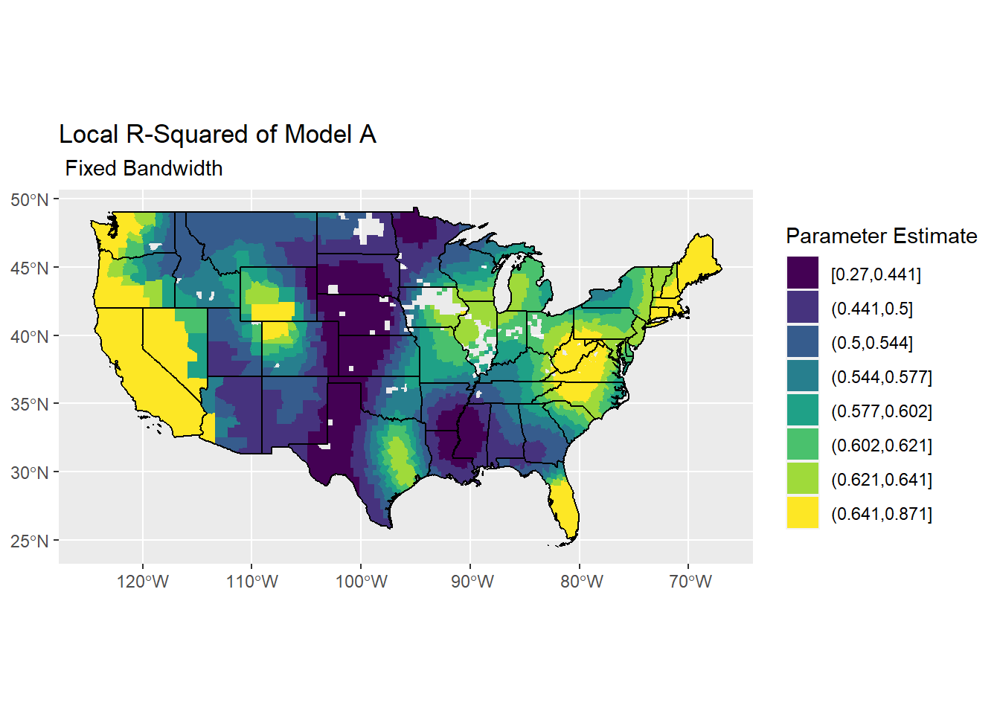
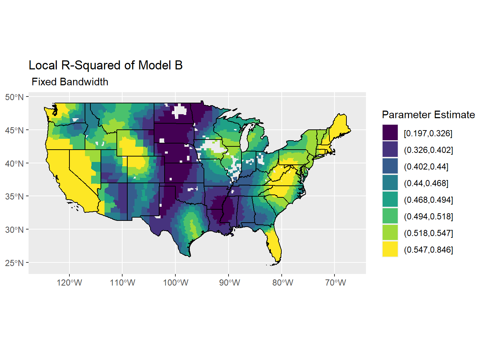